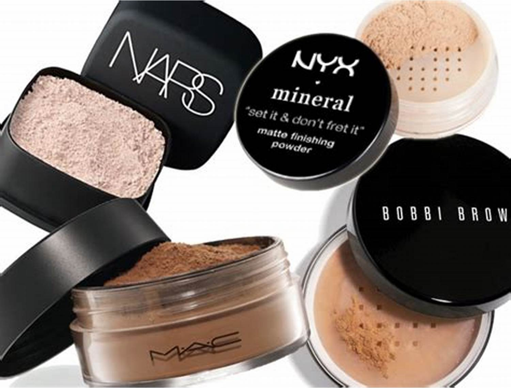
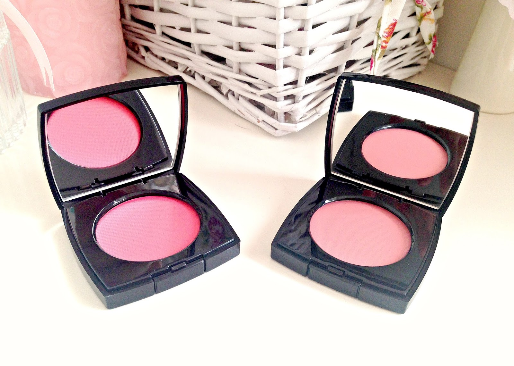
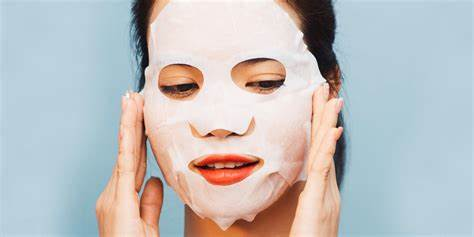

Kunci makeup yang flawless adalah base makeup yang tepat.
Dibawah ini akan membantu Anda menemukan base makeup yang sesuai dengan kebutuhan Anda.
Primer
Primer membantu mengurangi keringat melalui pori-pori, yang membuat riasan Anda bertahan lebih lama.
Primer juga bertindak sebagai perisai alami dari debu, air,
dan kotoran yang mungkin membuat riasan Anda luntur.
Fondation
Foundation merupakan base makeup yang digunakan untuk meratakan warna kulit.
Base makeup ini juga dapat menyamarkan pori-pori dan menghaluskan tekstur kulit yang kasar.
Ada beberapa jenis fondation yang bisa ditemui di pasaran :
1. Powder Fondation (untuk kulit berminyak)
2. liquid Fondation (untuk menghasilkan kulit yang lembab)
3. Cream Fondation (untuk hasil yang lebih coverage)
Powder

Sebelum kalian memutuskan untuk membeli bedak yang cocok dengan kebutuhan, ada baiknya kalian kenali dulu beberapa jenis bedak beserta fungsinya masing-masing.
Yuk, tanpa harus basa-basi lebih lama lagi, berikut adalah jenis-jenis bedak yang wajib kalian ketahui.
1. Compact Powder
Bentuk : Padat
Cocok untuk : kulit kering
2. Loose Powder
Bentuk : Tabur
Cocok untuk : kulit berminyak
3. Two Way Cake
Bentuk : Padat
Bentuk : fondation + bedak
4. Translucent Powder
Bentuk : Padat
Bentuk : Tabur
Kegunaan : mengunci fondation agar tahan lebih lama
Blush
Sebelum kalian memutuskan untuk membeli bedak yang cocok dengan kebutuhan, ada baiknya kalian kenali dulu beberapa jenis bedak beserta fungsinya masing-masing.
Yuk, tanpa harus basa-basi lebih lama lagi, berikut adalah jenis-jenis bedak yang wajib kalian ketahui.
1. Powder Blush
Bentuk : Padat
Cocok untuk : Segala jenis kulit
2. Cream Blush 
Bentuk : Cream
Cocok untuk : Kulit Cenderung Kering
Eye Product
1. Eyeshadow
Kegunaan : Memberikan warna pada kelopak mata
2. Pencil Brow
Kegunaan : Menggambar alis
3. Mascara
Kegunaan : Membuat bulu mata lentik dan panjang
4. eyeliner
Kegunaan : Membuat mata terkesan lebih tajam dan tegas
Lip Product
1. Lip Tint Kegunaan : Memberikan warna pada bibir
Finish look : alami
2. Lip Balm Kegunaan : Merawat bibir pecah-pecah
3. Lipstick
Kegunaan : Memberi warna pada bibir
4. Lip Cream
Kegunaan : Membuat mata terkesan lebih tajam dan tegas
Finish look : matte & tahan lama
Cleansing
Cleanser merupakan sebuah produk yang harus dipakai setiap hari
untuk mengangkat kotoran sisa makeup, debu, dan bakteri penyebab jerawat.
1. Cleansing Foam Bentuk : Busa
Cocok Untuk : Kulit Berminyak
2. Micellar Water Kegunaan : mengangkat makeup dan debu pada wajah
Cocok Untuk : Kulit Berminyak
3. Gel Cleanser Kegunaan : Membersihkan wajah khusus untuk kulit berjerawat dan berminyak
4. Cleansing Oil Kegunaan : Membersihkan sisa makeup dan kotoran
Cocok untuk : Kulit kering
Moisturizer
Moisturizer atau pelembap adalah langkah yang sangat krusial dalam tahap skincare.
Selain memberi hidrasi, pelembap berfungsi untuk mengunci produk-produk skincare di tahap sebelumnya.
Beauty Tools
Di bawah ini adalah tools untuk mempermudah saat makeup
1. Brush Bentuk : Kuas
Kegunaan : Mengaplikasikan bedak, eyeshadow, powder dll.
2. Eyelash Curler
Kegunaan : menjepit bulu mata agar lentik
Beauty Tips
1. Tips Berlibur Ke Pantai Supaya Tetap Glowing
- Gunakan Sunscreen & sunblock untuk melindungi dari sinar UVA & UVB
- Gunakan Topi agar kulit tidak terkena paparan panas matahari secara langsung
2. Tips memakai sheet mask 
- Bersihkan terlebih dahulu sisa makeup dan kotorang dengan Cleanser
- Gunakan Sheet Mask dengan merata. Diamkan 15 menit saja.
- Jangan membilas wajah karena akan membuang kandungan masker
Toko Makeup & Skincare
Sociolla Bandung
alamat : 23 Paskal Shopping Center Bandung Lantai GF
Sociolla Yogyakarta
alamat : Jogja City Mall, Jl. Magelang No.18 No.6, Kutu Patran,
Sinduadi, Kec. Mlati, Kabupaten Sleman, Daerah Istimewa Yogyakarta 55284